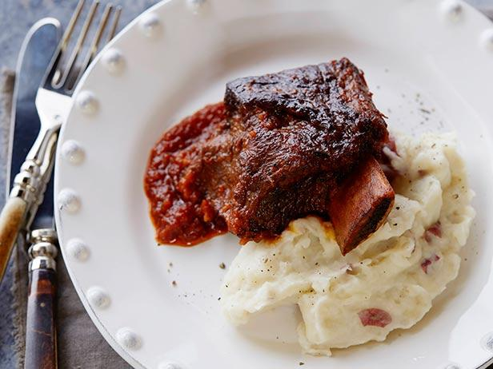

Braised Short Ribs

Classic French Braised Short Ribs
Braised Short Ribs are a long slow cooked beef in red wine, mirepoix and herbs.
Ingredients:
- Short Ribs
- Celery, onions, carrots
- Red wine
- Rosemary and Thyme
Steps to make:
- Sautee mirepoix
- Add red wine and reduce
- Add Rosemary and Thyme
- Add short ribs
- Cover and cook in 350 over for 3 hours